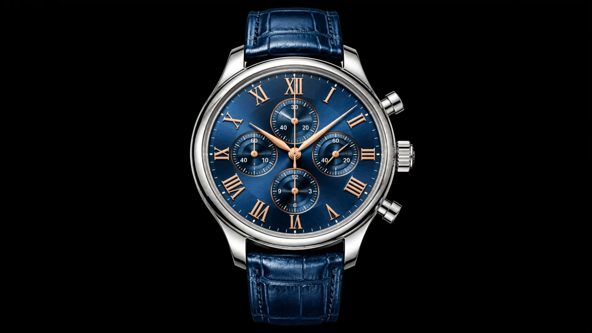
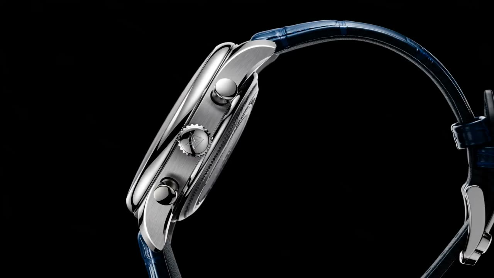
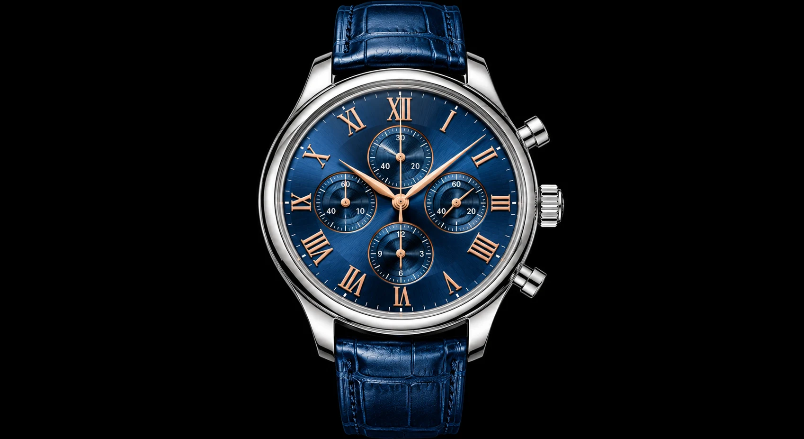
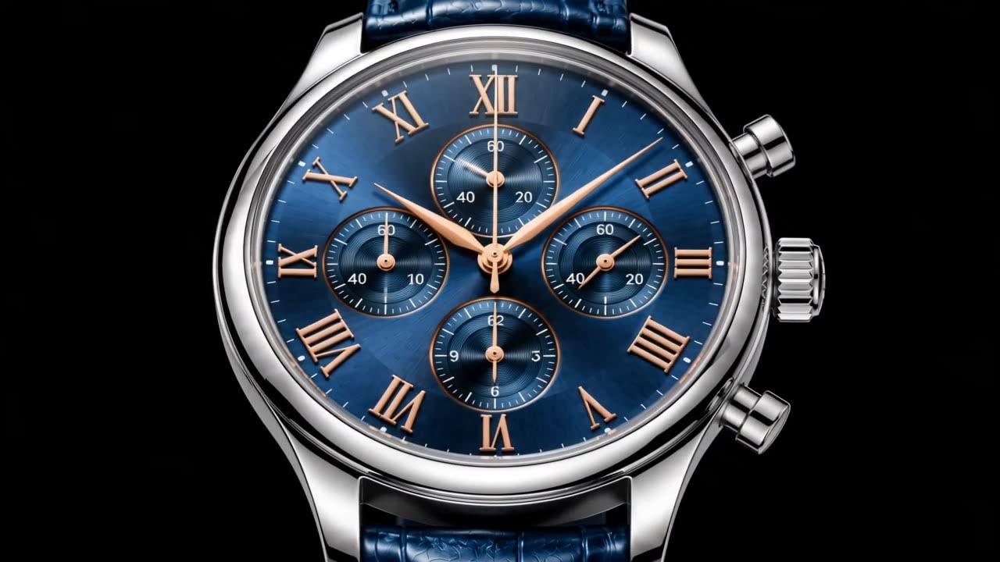

夜の深さを、手首に。
※ 架空のブランドの見本サイトです。実在の商品ではなく、販売もしていません。
真夜中の空を、放射状のサンバーストで描いた文字盤。光の角度で群青から瑠璃色へと表情を変え、12のローマ数字は5Nローズゴールドで一つずつ植字しています。

鏡面と筋目を交互に仕上げた316Lステンレス。袖口に収まる薄さを優先しました。
2時位置でスタート・ストップ、4時位置でリセット。指先に返る手応えを調整しています。
内側に反射防止のコーティング。斜めから見ても文字盤の青が沈みません。
時計師が使う 2.5 倍のルーペを再現しました。画像の上でカーソルを動かすか、指でなぞってください。

中心から放射状に入れた筋目が、光を受けて青の濃淡を描きます。
ローマ数字と針は同じ金色で揃え、暗い場所でも輪郭が残ります。
12時に30分積算計、9時にスモールセコンド、6時に12時間積算計。
文字盤と同じミッドナイトブルーで染め、手縫いで仕上げています。
Ref. KS-4102-BL

※ 価格・本数は見本のための架空の数字です。販売はしていません。